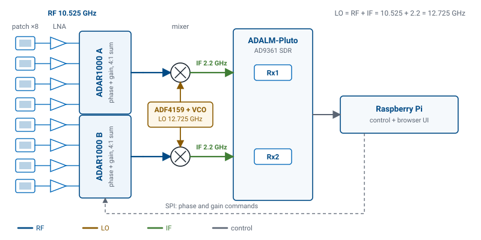
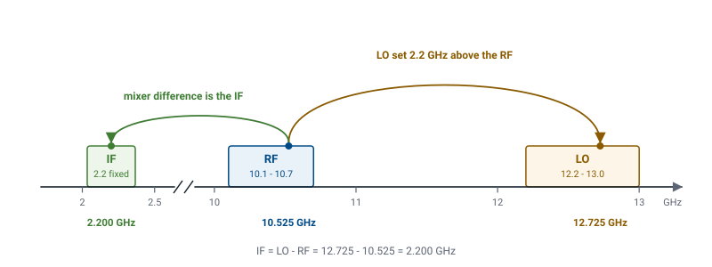

L17 - Introduction to Phased Array Hardware#
Introduction to Phased Array Hardware
Today you meet the machine that provides it.
Lesson 17 · Antennas, Phased Arrays, and Radar Systems · Dr. Neil Rogers
Learning Objectives
- I can identify each block of the ADALM-PHASER signal chain and state its role.
- I can trace a received X-band signal through the frequency plan to the IF the SDR digitizes.
- I can explain the PHASER's hybrid beamforming architecture — analog within each 4-element subarray, digital across the two subarray outputs.
- I can bring up the Phaser GUI, find the microwave source, and control array gain and frequency from the browser.
- I can read the Python calls that set the array's phases and the SDR's tuning.
Lesson 16 built the array factor by assuming you can hand every element its own amplitude and phase, then add the results. That assumption is the whole of array theory, and satisfying it takes real hardware: eight phase shifters, eight attenuators, a summing network, a downconverter, and a computer to command all of it. Today you meet the machine that provides it. This is the first hands-on session with the ADALM-PHASER, the 8-element X-band array the rest of Module 3 runs on. By the end of the period you will have found each block on the board, traced a \(10.525\ \text{GHz}\) signal from a patch to a spectrum display, and moved two controls in the browser interface you will use in every lab that follows.
The receive chain
The PHASER is a receive array. A source somewhere in front of it radiates, the eight patches capture the wave, and everything between the patches and the Raspberry Pi exists to turn eight microwave signals into two streams of numbers.
The ADALM-PHASER receive chain
Follow the figure left to right.

The patches
Eight microstrip patches sit in a horizontal row on the front face of the board, spaced \(d = 14\ \text{mm}\) center to center. Each one is an antenna in its own right with its own element pattern. A wave arriving off broadside reaches them in sequence, so the eight signals differ in phase by the progressive amount Lesson 16 called \(\Delta\phi\). That phase difference is the only information the array has about arrival angle, and preserving it is the job of everything downstream.
The LNAs
An ADL8107 low-noise amplifier sits directly behind every patch, ahead of any phase shifting or combining. Gain placed first sets the receiver’s noise figure, because every loss after it is divided by that gain when referred to the input. Phase shifters and power combiners are lossy, so the order here is deliberate.
The ADAR1000s
Two ADAR1000 chips do the beamforming. Each is a 4-channel analog beamformer: it applies a programmable phase and a programmable gain to each of its four inputs at RF, then sums the four into a single output. The phase is set in steps of \(2.8125^\circ\), which is \(360^\circ/2^7\) — a 7-bit phase shifter. The gain is what you will use as a taper in Lesson 25. When the GUI shows you eight element sliders, those sliders are writing registers in these two chips.
The mixers and the LO
Each ADAR1000 output goes into an LTC5548 mixer, where it is multiplied by a local oscillator generated by an ADF4159 PLL driving an HMC735 VCO. The mixer keeps the difference between the two, which lands at a fixed \(2.2\ \text{GHz}\) intermediate frequency. Part 2 works the numbers.
The Pluto
An ADALM-Pluto — an AD9361 transceiver — digitizes the two IF channels. It is tuned to \(2.2\ \text{GHz}\) and samples at 3 MSPS in the course GUI. It has two receive channels and produces two streams of complex samples.
The Raspberry Pi
The Pi on the back of the board runs the Python backend.
It writes phases and gains to the ADAR1000s over SPI, tunes the Pluto and the
ADF4159 through pyadi-iio, reads the IQ buffers, and serves the browser
interface. Everything you do in the lab arrives here as a command over a
WebSocket.
Why the architecture splits where it does
Count the phase shifters and count the analog-to-digital converters. There are eight phase shifters and two ADC channels. That ratio is the design decision.
A phase shifter and an attenuator at RF are small, cheap, and low-power, so putting one behind each element costs little. A receive channel — mixer, filter, ADC, and the data plumbing to carry the samples away — is expensive in parts, in board area, and in power. Digitizing all eight elements would give software complete freedom to form any pattern it likes after the fact, and it would cost four times the receiver hardware this board carries.
What the split decides
The PHASER takes the middle road. It is a hybrid beamformer: the beam is formed in analog inside each 4-element subarray, and the two subarray outputs are combined digitally afterwards.
Analog beamforming |
Digital beamforming |
|
|---|---|---|
Where on the PHASER |
inside each ADAR1000, 4 elements |
across the two subarray outputs |
Weights available |
8, one per element |
2, one per channel |
Receiver channels needed |
1 per subarray |
1 per channel |
Beams at once |
one |
as many as software can compute |
Key point
The hybrid split decides what is possible later. Eight elements give you eight analog weights, so the array can steer, taper, and place a null anywhere you want it. But once the ADAR1000 sums its four elements, the individual element signals are gone, and software downstream sees two numbers, not eight. When you reach adaptive nulling in Lesson 28, the MVDR algorithm has exactly two digital degrees of freedom to work with, and that limit comes from this figure.
The frequency plan
The board receives X-band, roughly \(10.0\) to \(10.5\ \text{GHz}\). Nothing in the lab digitizes X-band. The mixers move the received signal down to a single fixed IF, and that IF is the only frequency the SDR ever tunes.
The RF band, the LO band, and the fixed IF

The HB100 source
The source is an HB100 Doppler module, a self-contained X-band transmitter about the size of a matchbox. Its nominal output is \(10.525\ \text{GHz}\). The oscillator inside it is a free-running dielectric resonator, not a locked synthesizer, so the actual frequency of any particular unit is set by the mechanical dimensions of that resonator and drifts with temperature. Units land anywhere from about \(10.1\) to \(10.7\ \text{GHz}\). This is why the GUI has a Find HB100 button: the software sweeps the LO, watches where the IF tone appears, and records the answer. The array cannot assume the source frequency, so it measures it.
High-side injection and the IF
The LO comes from an ADF4159 PLL locking an HMC735 VCO, tunable over \(12.2\) to \(13.0\ \text{GHz}\). The mixers use high-side injection, meaning the LO sits above the RF rather than below it, so
Worked example — tracing the nominal source to the IF
Worked example — tracing the nominal source to the IF
An HB100 measures \(10.525\ \text{GHz}\). Where does the LO have to sit, and what does the Pluto see?
The IF is fixed at \(2.2\ \text{GHz}\) by the filtering after the mixer, so the LO must sit that far above the signal:
That value is inside the \(12.2\) to \(13.0\ \text{GHz}\) VCO range, so it is reachable. The mixer output is
Worked example, continued
Worked example, continued
and the Pluto is tuned to \(2.2\ \text{GHz}\) with a 3 MSPS sample rate, giving a 3 MHz-wide window around that center. A tone \(1\ \text{MHz}\) off the tuned center lands inside the window and shows up as a peak in the FFT display. A tone \(200\ \text{MHz}\) off does not appear at all, which is what a wrong LO looks like on the screen.
The reachable RF band
Run the arithmetic the other way to see the coverage the hardware has. With the LO limited to \(12.2\) to \(13.0\ \text{GHz}\) and the IF fixed at \(2.2\ \text{GHz}\), the reachable RF band is \(10.0\) to \(10.8\ \text{GHz}\). Every HB100 you are likely to be handed falls inside it.
Interactive — the PHASER signal chain
The widget below is the same chain as the figure, but you can click it. Select a block to see what it does and what frequency lives at that node, then drag the HB100 slider and watch the RF and LO labels move while the IF label does not. Notice that only one block changes its setting when the source frequency changes: the LO. That is the point of a fixed-IF plan.
The station
Each station has one kit:
the ADALM-PHASER board, with the Raspberry Pi and the ADALM-Pluto attached on the back
an HB100 microwave source on its own small stand or battery holder
a USB-C supply for the board and a supply for the Pi
a camera tripod, for the board and for aiming the source
a laptop on the lab network — the laptop only runs a browser
Bringing the station up
Mount the PHASER on the tripod with the patch face vertical and the row of patches horizontal. The array steers in the plane of that row, so a board mounted on its side steers up and down and none of the lab works.
Connect the board and the Pi supplies. Give the Pi about a minute to boot and start the service.
On the laptop, browse to
http://phaser.local:8080. The page connects over a WebSocket and the plot area starts drawing. If the page loads but no data arrives, the backend is not running yet — wait, then reload.
The Phaser GUI — Configuration
The interface has a sidebar of control sections on the left and a plot area with tabs on the right. You will use all of these over the next several lessons; today only a few matter.
Sidebar section |
What lives there |
|---|---|
Configuration |
Signal Freq (GHz), Rx Gain (dB), Tx Gain (dB), Signal BW (MHz), Tx Mode, Calibrate |
The Phaser GUI — Element Gains and Phase Control
Sidebar section |
What lives there |
|---|---|
Element Gains |
Rx1–Rx8 sliders and the taper presets |
Phase Control |
per-element phase offsets and Reset |
The Phaser GUI — Beam Steering, Quantization, and Digital Beam Forming
Sidebar section |
What lives there |
|---|---|
Beam Steering |
Steer Angle (deg) and Apply |
Quantization |
Steer Resolution (deg), Phase Shift Bits |
Digital Beam Forming |
Manual and MVDR modes for the two digital channels |
The Phaser GUI — Plot Options and Lab Presets
Sidebar section |
What lives there |
|---|---|
Plot Options |
peak markers, squint info, monopulse traces |
Lab Presets |
buttons 1 through 8, one per workshop lab |
The plot tabs
The plot tabs are Rectangular, Polar, FFT, and Tracking. Start runs a beam sweep and Freeze holds a trace so you can compare against it. Today you work in the FFT tab, which shows the baseband spectrum of one receive channel rather than a beam pattern.
Find HB100
Two buttons need a word before you press anything.
Find HB100 sweeps the LO until it locates the source and writes the measured frequency to a calibration file on the Pi. Run it once per source, at the start of the period, with the HB100 powered and pointed at the array. Every later calculation the software does uses that number.
Calibrate
Calibrate measures the per-element gain and phase offsets of the array itself — the small differences between the eight channels caused by trace lengths and part tolerances — and stores them so that commanding zero phase across the array actually produces a broadside beam. The stored calibration survives a reboot, so you normally run it once at the start of a lab period and leave it alone.
Both buttons take a few seconds
Note
Both buttons write files on the Pi and both take some seconds to finish. Do not press them repeatedly while they run.
Load the preset and place the source
Work through these in order and record what the numbered steps ask for.
Press Lab Preset 1 (Steering Angle). The GUI loads the workshop’s initial state and opens the FFT tab in Beam Sweep mode, with a uniform taper and the beam commanded to broadside.
Power the HB100 and place it about \(1\ \text{m}\) in front of the array at boresight, at the same height as the patch row, with its own patch face toward the board.
Find HB100 and read the peak
Press Find HB100. When it finishes, read the value it reports and write it down. Expect something within a few hundred MHz of \(10.525\ \text{GHz}\).
Look at the FFT tab. A single narrow peak should stand well above a flat noise floor. Record the frequency at which the peak appears in the baseband spectrum and how far above the floor it sits, in dB. The separation should be unambiguous — at least 20 dB with the source at \(1\ \text{m}\). Less than that means the source is misaimed, too far away, or the LO is wrong.
Vary the receive gain
Change Rx Gain from its preset value down by 10 dB, then up by 10 dB. Record the peak level and the noise floor level at each of the three settings. Both move together, because this gain is applied inside the SDR, long after the LNAs have already set how much noise is riding on the signal. The separation between peak and floor therefore changes little. It does shrink at the lowest gain setting, where the SDR’s own noise starts to contribute.
Shift the tuned frequency
Change Signal Freq (GHz) by \(-0.0005\ \text{GHz}\), which is 500 kHz down, and watch the peak. The GUI holds the IF fixed and moves the LO, so lowering the assumed source frequency lowers the LO by the same amount and the observed tone moves 500 kHz down in the baseband window. Record the shift and check it against the arithmetic in Part 2. The whole window is only 3 MHz wide at a 3 MSPS sample rate, so an error of more than about 1.5 MHz walks the tone off the display entirely, which is what a bad Find HB100 result looks like. Return Signal Freq to the measured value before continuing.
Rotate the source
Rotate the HB100 by hand to point away from the array, then back. The peak drops and returns. This is a first look at the element pattern you will measure properly in Lesson 23.
No hardware?
No hardware?
The same procedure runs against the simulator. Start the backend with
python phaser_headless.py --sim
and open http://localhost:8080. The sim synthesizes element-level IQ from a
target at boresight, so steps 1, 4, 5, and 6 behave as described; the tone
appears \(1\ \text{MHz}\) above the center of the baseband window. Two steps have
no simulated equivalent. Step 3 is unnecessary, because the simulated source is
already at a known frequency, and step 7 cannot be done at all, because the
simulated target is fixed at boresight and cannot be rotated.
Reading the code — tuning the SDR
Everything the GUI does reaches the hardware as a pyadi-iio call. Three short
excerpts from the course backend cover the parts you have just used.
Tuning the SDR and setting its gain:
sdr = adi.ad9361(uri=ip) # the Pluto's AD9361 transceiver
sdr.rx_enabled_channels = [0, 1] # both subarray channels
sdr.sample_rate = int(sample_rate) # 3e6 in the GUI
sdr.rx_lo = int(rx_lo) # 2.2e9 - the IF, never X-band
sdr.rx_rf_bandwidth = int(sample_rate)
sdr.gain_control_mode_chan0 = "manual"
sdr.rx_hardwaregain_chan0 = int(rx_gain) # the Rx Gain slider, in dB
sdr.gain_control_mode_chan1 = "manual"
sdr.rx_hardwaregain_chan1 = int(rx_gain)
What the tuning call does
Line by line: adi.ad9361 opens a connection to the transceiver at a network
address, and the two enabled receive channels are the two subarray outputs. The
sample rate fixes the width of the baseband window, and rx_rf_bandwidth
matches the analog filter to it. rx_lo is the tuned frequency, and it is
\(2.2\ \text{GHz}\) every time — the SDR never learns what band the array is
looking at. Automatic gain control is switched off deliberately, because a
receiver that changes its own gain during a beam sweep produces a pattern
measurement that means nothing. The manual gain is what the Rx Gain slider
writes.
The local oscillator, on its own chip
The LO is a separate device on the same board:
synth = adi.adf4159(rpi_ip)
synth.frequency = int(lo_freq) # 12.725e9 for a 10.525 GHz source
Reading the code — writing the phases
Setting the array’s phases:
def ADAR_set_Phase(array, PhDelta, phase_step_size, phaseList):
""" Set array phases for given steering angle/delta """
for i in range(8):
element_id = i + 1
base_phase = phaseList[i] + i * PhDelta
q_phase = round(base_phase / phase_step_size) * phase_step_size
q_phase = q_phase % 360
array.elements[element_id].rx_phase = q_phase
What the phase-setting loop does
Here array is the pyadi-iio object that represents both ADAR1000s as one
8-element array, so array.elements[1] through array.elements[8] reach the
individual channels regardless of which chip they live on. phaseList holds the
per-element calibration offsets measured by Calibrate. PhDelta is the
progressive phase from element to element — the \(\Delta\phi\) of Lesson 16 — so
i * PhDelta builds the linear phase ramp across the aperture and the
calibration offset is added on top. The next two lines are the hardware’s
limitation made explicit: the commanded phase is rounded to the nearest multiple
of phase_step_size, which is \(2.8125^\circ\), and wrapped into \(0\) to
\(360^\circ\). Lesson 18 computes PhDelta from a steering angle, and Lesson 26
studies what that rounding does to the pattern.
Writing the taper
The matching call for the taper writes gains instead of phases:
array.elements[element_id].rx_gain = int(taper_list[i])
Deliverables
Submit the following.
The measured HB100 frequency from step 3, and the IF arithmetic that goes with it. Fill in this table.
Quantity
Value
Measured HB100 frequency
Required LO frequency
Resulting IF
Is the LO inside 12.2–13.0 GHz?
Deliverables — the diagram and the FFT
A labeled block diagram. Sketch the receive chain from patch to Pi and label every block with its name and the frequency present at that point. Mark where the analog summing happens and where the digital channels begin.
Your FFT observations from steps 4, 5, and 6: peak frequency, peak level and noise floor at each of the three Rx Gain settings, and the shift in the peak when Signal Freq moved by 500 kHz.
Deliverables — the write-up
Two written answers, three or four sentences each.
Why does the control software have to hunt for the HB100’s frequency instead of assuming \(10.525\ \text{GHz}\)?
The array has eight elements, but software sees only two digital channels. Explain where the other six went and name one measurement this rules out.
Lab sheet
The lab sheet is the turn-in document for all of it: Lab sheet (PDF).
Summary — the array hardware
Symbol / idea |
What it is |
Number to remember |
|---|---|---|
\(d\) |
patch pitch along the array |
\(14\ \text{mm}\), which is \(0.491\lambda\) at 10.525 GHz |
ADAR1000 |
4-channel analog beamformer, phase and gain per element |
two chips, four elements each, phase LSB \(2.8125^\circ\) |
Summary — the hybrid split
Symbol / idea |
What it is |
Number to remember |
|---|---|---|
Hybrid split |
analog sum inside a subarray, digital across subarrays |
8 elements in, 2 digital channels out |
Summary — the source and the LO
Symbol / idea |
What it is |
Number to remember |
|---|---|---|
HB100 |
free-running DRO source, not a synthesizer |
\(10.525\ \text{GHz}\) nominal, found anywhere in 10.1–10.7 GHz |
LO |
ADF4159 PLL driving an HMC735 VCO |
\(12.2\) to \(13.0\ \text{GHz}\), high-side |
Summary — the IF and the mixing rule
Symbol / idea |
What it is |
Number to remember |
|---|---|---|
\(f_{\text{IF}}\) |
mixer output the SDR tunes |
\(2.2\ \text{GHz}\), fixed |
Frequency plan |
high-side mixing rule |
\(f_{\text{LO}} = f_{\text{RF}} + 2.2\ \text{GHz}\) |
Summary — the receiver and interface
Symbol / idea |
What it is |
Number to remember |
|---|---|---|
ADALM-Pluto |
AD9361 SDR, two receive channels |
3 MSPS in the GUI, tuned to 2.2 GHz |
Phaser GUI |
browser front end served by the Pi |
|
Practice
Where this is going
You now have a machine that can put an arbitrary phase on each of eight
elements, and you have not yet told it what phase to use. Lesson 18 supplies the
missing piece with a path-length argument: a wave arriving at angle \(\theta_0\)
reaches consecutive elements \(d\sin\theta_0\) apart in distance, and the phase
ramp that compensates that delay is \(\Delta\phi = kd\sin\theta_0\). That single
expression turns a steering angle into the eight numbers ADAR_set_Phase
writes. Lesson 19 brings you back to this station to steer the real beam with
them and measure where it actually points.
Before Lesson 18, review the array factor from Lesson 16 and be ready to state what \(\psi\) is and why the pattern peaks when it is zero. It is worth keeping the deliverable block diagram from today somewhere you can find it; the same figure comes back in Lesson 28, when the two digital channels stop being a detail and become the constraint the whole lab works around.